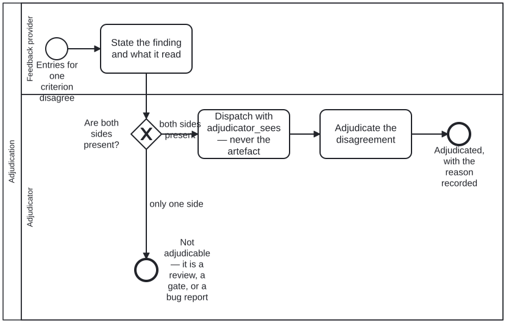

Generated from
cat-harness/processes/sdlc/adjudication.bpmnbygen-processes-viz.ts— do not edit here. All processes
Process_Adjudication · advisory · 3 step(s)
A criterion’s reviewer entries disagree and no mechanism can settle them: this is the judgement that does, and the record it must leave.
You are in this process when a sidecar holds two entries for ONE criterion that do not agree — a script failing what a reviewer passed, an agent and a person reading the same block differently. That is the entry condition and it is computable, which is why the first gateway leaves rather than guessing: one reviewer and no checker is a review, one checker and no reviewer is a gate, and neither is adjudicable. Nobody enters this process by declaring that they have entered it.
Three things the diagram holds that prose kept losing. The adjudicator is DISPATCHED rather than briefed — given the findings and the checker’s output and, deliberately, never the artefact, because an adjudicator shown the artefact can talk itself into any reading of the finding and that failure raises no error. The adjudication LEADS the criterion and the checker’s entry is KEPT beneath it, because a disagreement between a checker and a reviewer is information and a sidecar showing only the winner has lost it. And the dispensation is scoped to the version it was granted against by its field_hash, so it lapses when the source moves and never becomes precedent.
This process ENDS at the judgement. What the answer means, and what is done about it, belongs to whoever asked — criterion-adjudication.bpmn is the QA-criterion specialisation, where the finding stands, the criterion is scoped, or a dispensation is granted with its reason. Until 2026-09-23 those three lived here and every caller ran them: six diagrams called this process and only two asked a question they answer. Bean bvuk.
What stays shared is what must not vary: the entry condition nobody may declare their way past, the untainted dispatch, and the restriction to a person or an agent. What a legitimate outcome IS does vary, and it now varies where it is asked.

adjudication skill without calling this process: CRDM close-out, CRDM Phase 5 — beans and sign-off, Criterion adjudication — activity-calls-skill-process asks whether each should be a call activity.| lane | role | what it does here |
|---|---|---|
| Feedback provider | feedback-provider |
Drawn once for any number of providers — the owner’s “Judgment of >= 1 Feedback Provider’s feedback” — because the process does not change with the count and a lane per provider would say it did. A script checker, a review agent, a reader and an SME all act here, which is why the role admits person, agent and system alike. This lane knows the one thing the lane below does not: WHAT IT ACTUALLY LOOKED AT. A_StateFinding exists to move that across, and without it the adjudicator cannot tell a real disagreement from two parties reading different things — which looks identical from the sidecar and is not the same defect at all. The lane holds no gateway and reaches no end event on purpose: a provider states a finding and has no entitlement to settle it. |
| Adjudicator | adjudicator |
Every decision and every write is here, and that concentration is the accountability: a reviewer reports, an adjudicator settles, and a process where the settling were spread across lanes would have no way to say who decided. The role admits person and agent — refresh-materialized already states the reason, “a human or agentic decision, never a merge rule” — and the judgement steps are drawn as plain tasks rather than user tasks so the diagram does not assert a person where an agent is legitimate.A_Dispatch is in this lane although the adjudicator is its SUBJECT rather than its performer, and that is deliberate: whoever composes the brief chooses what the adjudicator may see, so putting it anywhere else would let the composing party grade its own input. untainted-verification states the rule the step enforces — the adjudicator is given the checker’s output and never the artefact. |
Every one of the 3 step(s) is documented.
| step | lane | skill / sub-process | what it does |
|---|---|---|---|
State the finding and what it readA_StateFinding |
Feedback provider | content-feedback |
Each provider says what it found and on what evidence. A finding that does not show what it read is an opinion, and an adjudicator cannot tell it from a finding about some other version of the block. |
Dispatch with adjudicator_sees — never the artefactA_Dispatch |
Adjudicator | untainted-verification |
UntaintedDispatch on the criterion declares what each party is given; the caller names a subject and a criterion and does not hand-assemble a brief, because the party composing a brief by hand is the producer. untaintedPartitionDefects reports overlap when the checker and the adjudicator can read the same file — one of them is then grading its own input, and the verdict measures nothing while raising no error. |
Adjudicate the disagreementA_Adjudicate |
Adjudicator | adjudication |
The judgement itself, and the one step nothing here can check: if a mechanism could decide it, the process would not have been entered. It declares NO cat-harness.processes:adjudication codes on purpose, and that absence is the whole of bean bvuk. This step used to name three — stands, scope, dispensation — and six diagrams called it: review-narrative and voice-review, whose question those three answer, and four whose question they do not. refresh-materialized asks which side wins a local-vs-remote conflict; there is no criterion to scope there and no dispensation to grant, yet the outcome half ran regardless. Since the caller’s question decides the permitted answers, the caller declares them: cat-harness.processes:adjudication codes on its OWN call activity, with its own gateway acting on them. criterion-adjudication.bpmn is that for the QA-criterion question.What could NOT be fixed by passing the codes as data, which was this bean’s first recommendation: the three branches ran three different TASKS, so a caller handed local-wins would have had it pointing at A_ScopeCriterion. The branches had to move, not the enum. |
Every one of the 1 decision(s) is documented.
| decision | what decides it | branches |
|---|---|---|
Are both sides present?GW_Adjudicable |
A missing entry is not a disagreement. One reviewer and no checker is a review; one checker and no reviewer is a gate. Leaving here is the correct outcome for both, and it is why an actor cannot enter this process simply by declaring that it has. | both sides present → Dispatch with adjudicator_sees — never the artefact only one side → Not adjudicable — it is a review, a gate, or a bug report |